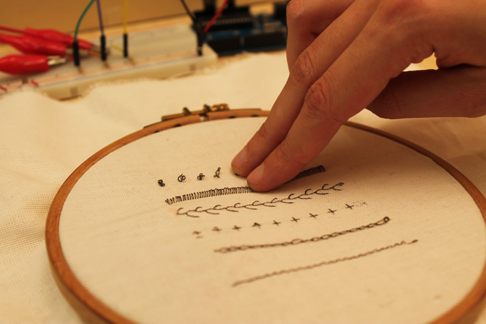
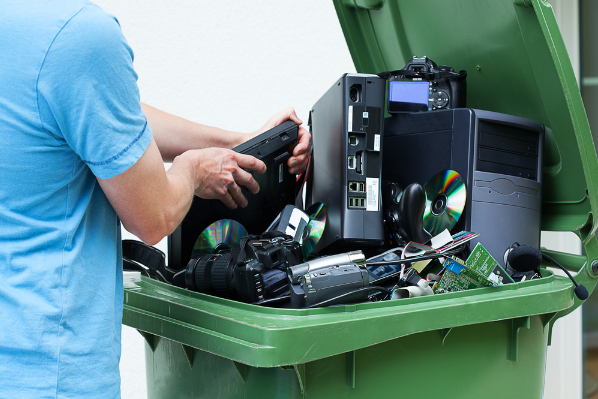

Robotic Arts Intro Fall 2017 (IA277.01)
- Instructor: Lucas Haroldsen (lharoldsen@mica.edu)
- Class Site: yasunaga.work/raif17
- syllabus: syllabus.pdf
- Resources: links.html
09/19: more listening --- [Serial Communication and Analog input]

Handmade Switches!
- Let's take a look at everyone's work on their two switches
- Pay attention to the materials and construction
- Document the switches! Two images or one short video to folder 9/19
**Reminder : day bug and night bug
The day bug and night bug documentation is due. You should have two images or one short video in folder 9/12
Review
- Digital signals
- Input and Output
- digitalRead and digitalWrite
- variables
- if statement
Today, we will go over together:
- Arduino reference page here!
- Analog input
- Serial Communication --> Serial Monitor and Serial Plotter
- Using potentiometer, photocells, conductive foam
- Setting a threshhold for your sensor
- Combining conditional logic to detect ranges(||, &&)
- Analog switches
- Fritzing
Tonight's Code
Reading: Medium by Malcom McCullough
"To begin, the fundamental difference between digital and traditional media is rooted in microstructure: bits versus atoms. Processes that move physical atoms around are precisely the irreversible aspect of traditional work. According to very fundamental laws of physics, operations such as cutting, bonding, and mixing are irreversible. Mix black paint into white, and you've got grey for the duration. Crack a fine piece of laboriously refined jade work, and you have lost not only time but also expensive material—a rare configuration of atoms.
By contrast, the microstructure of the computer medium is bits: a specified arrangement of symbols. The computer is made out of atoms, to be sure, but its logic employs symbols that quantize the physical charges they represent—it obtains stable bits. Because any physical deviations caused by atoms get rounded and corrected, these symbols built on bits do not degrade. In the microstructure of the digital medium, arrangements and values can always be reconstructed; their previous states can be stored and recalled; additional instances and versions can be replicated."
From Abstracting Craft: The Practiced Digital Hand by Malcolm McCullough
- What did you think?
Here is the text The Theory of Affordances by James J. Gibson
Presentaton
How Computers Work: Information (binary)

Doug Engelbart's presentation at the Fall Joint Computer Conference in San Francisco, December 9, 1968 titled "A Research Center for Augmenting Human Intellect."
Full Text here -->
Afordance++
by Pedro Lopes, Patrik Jonell, Patrick Baudisch at the Hasso Plattner Institute
Conductive Skin by
Interactive Materiality

Embroidered potentiometer
Céleste Boursier
Ryota Kuwakubo
electronic harvesting day

On 10/3, the class is going to be dedicated to talking apart electronics and documenting. Start collecting, looking around for broken, unwanted, curious electornic objects to take apart.
You can find E-waste bins on campas where unwanted electronics are collected. Here are some locations.
- First floor of Digital Print Center next to the computer lab. There are black shelves and blue bins for broken electronics
- Brown Building First floor on the way to Cafe Doris
- Bunting First Floor next to bulletin board
- Station Building?
HOMEWORK
Analog Switch
By creating thresholds and looking for specific ranges, we can use the data from a single analog input to control digital signals, almost like several digital inputs.
For homework, I would like you to build off of today's sketch using two analog inputs.
Create a pattern of light using the number of LEDs of your choice.
Analog inputs can be the same or different. Create as many thresholds as you like.
Optional : Experiment with the quality of the light by either embedding or concealing your LEDs.
-
Here are some examples:
- Trigger a LED pattern when SensorA and SensorB are both in the range you specified at the same time
- Trigger a LED pattern when SensorA is in range and trigger another kind of pattern when sensorB is in range
- Trigger a LED1 when SensorA is in range and trigger LED2 when the sensorB is in range
-
Steps:
- Familiarize yourself with reading analog inputs
(Potentiomenter/Photocell/Piezo/variable resistors/Lie Detector/or other analog sensors of your choice) - Use the Serial monitor to see what values are coming from your analog sensor
- Decide which ranges of values of your analog sensor will trigger different patterns of LED blinking
Document
- 2 photos or 1 short video of your work
- arduino sketch .ino file
Upload documents to google doc in 9/26 folder